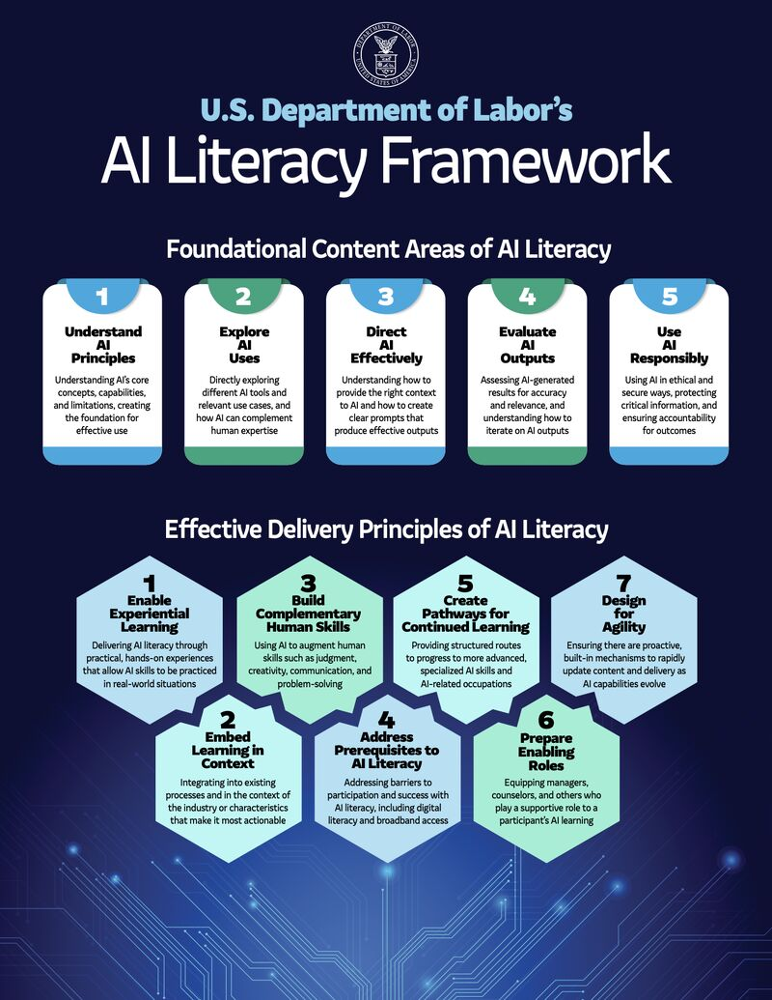

New AI Literacy Framework by the Department of Labor

Image Source: U.S. Department of Labor
The Department of Labor's framework includes two main parts. The first, titled "Foundational Content Areas of AI Literacy," focuses on five AI-related skills recommended for students, workers, employers and state and local agencies. These skills include "Understanding AI Principles"; "Explore AI uses"; "Direct AI effectively"; "Evaluate AI outputs"; and "Use AI responsibly." The framework provides concrete examples for each.
The second part, titled "Effective Delivery Principles of AI Literacy," covers strategies for teaching and learning the skills described above (including examples). These strategies consist of experimental learning, learning in context, design for agility, and approaches that help learners understand how AI complements human skills.
Implication: May influence curriculum design and federal funding alignment.
Source / Read full document →